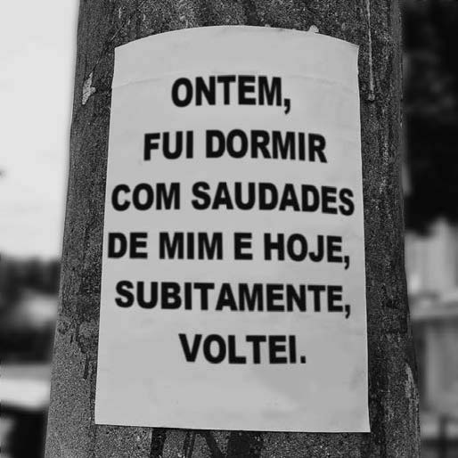

TEXTO I
Poesia em cartaz
O caminho habitual para o trabalho, aquele em que a gente já nem repara direito, pode ficar mais belo com um poema. O projeto #UmLambePorDia nasceu desta intenção: trazer mais cor e alegria para a cidade por meio de cartazes coloridos ao estilo lambe-lambe. Quem teve a ideia foi o escritor Leonardo Beltrão, em Belo Horizonte. “Em meio a olhares cada vez mais viciados, acabamos nos esquecendo da beleza envolvida em cada esquina e no próprio poder transformador da palavra”. Assim, a cada dia um cartaz é colocado por aí, para nos lembrar de reparar na cidade, na vida que corre ao redor e também em nós mesmos.
TEXTO II
 Disponível em: www.vidasimples.uol.com.br. Acesso em: 6 dez. 2017 (adaptado).Considerando-se a função que os cartazes colados em postes normalmente exercem nas ruas das cidades grandes, esse texto evidencia a